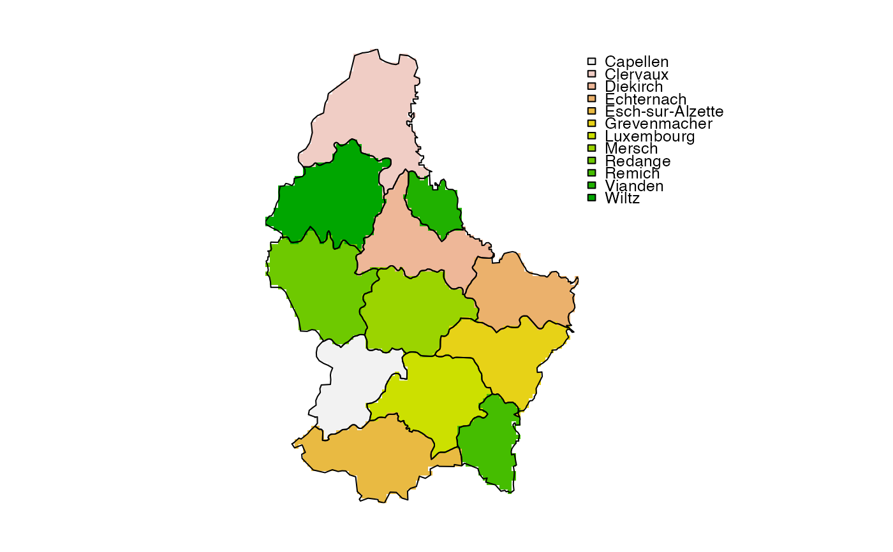

Rasterize vector data
rasterize.RdTransfer values associated with the geometries of vector data to a raster
Usage
# S4 method for class 'SpatVector,SpatRaster'
rasterize(x, y, field="", fun, ..., background=NA, touches=FALSE, update=FALSE,
cover=FALSE, by=NULL, filename="", overwrite=FALSE, wopt=list())
# S4 method for class 'matrix,SpatRaster'
rasterize(x, y, values=1, fun, ..., background=NA, update=FALSE,
by=NULL, filename="", overwrite=FALSE, wopt=list())Arguments
- x
SpatVector or a two-column matrix (point coordinates) or data.frame
- y
SpatRaster
- field
character or numeric. If
fieldis a character, it should a variable name inx. Iffieldis numeric it typically is a single number or a vector of lengthnrow(x). The values are recycled tonrow(x)- values
typically a numeric vector of length
1ornrow(x). If the length is belownrow(x)the values will be recycled tonrow(x). Only used whenxis a matrix. Can also be a matrix or data.frame- fun
summarizing function for when there are multiple geometries in one cell. For lines and polygons you can only use
"min","max","mean","count"and"sum"For points you can use any function that returns a single number; for examplemean,length(to get a count),minormax- ...
additional arguments passed to
fun- background
numeric. Value to put in the cells that are not covered by any of the features of
x. Default isNA- touches
logical. If
TRUE, all cells touched by lines or polygons are affected, not just those on the line render path, or whose center point is within the polygon. Iftouches=TRUE,addcannot beTRUE- update
logical. If
TRUE, the values of the input SpatRaster are updated- cover
logical. If
TRUEand the geometry ofxis polygons, the fraction of a cell that is covered by the polygons is returned. This is estimated by determining presence/absence of the polygon in at least 100 sub-cells (more of there are very few cells)- by
character or numeric value(s) to split
xinto multiple groups. There will be a separate layer for each group returned. Ifxis a SpatVector,bycan be a column number or name. Ifxis a matrix,byshould be a vector that identifies group membership for each row inx- filename
character. Output filename
- overwrite
logical. If
TRUE,filenameis overwritten- wopt
list with additional arguments for writing files as in
writeRaster
Examples
r <- rast(xmin=0, ncols=18, nrows=18)
# generate points
set.seed(1)
p <- spatSample(r, 1000, xy=TRUE, replace=TRUE)
# rasterize points as a matrix
x <- rasterize(p, r, fun=sum)
y <- rasterize(p, r, value=1:nrow(p), fun=max)
# rasterize points as a SpatVector
pv <- vect(p)
xv <- rasterize(pv, r, fun=sum)
# Polygons
f <- system.file("ex/lux.shp", package="terra")
v <- vect(f)
r <- rast(v, ncols=75, nrows=100)
z <- rasterize(v, r, "NAME_2")
plot(z)
lines(v)
